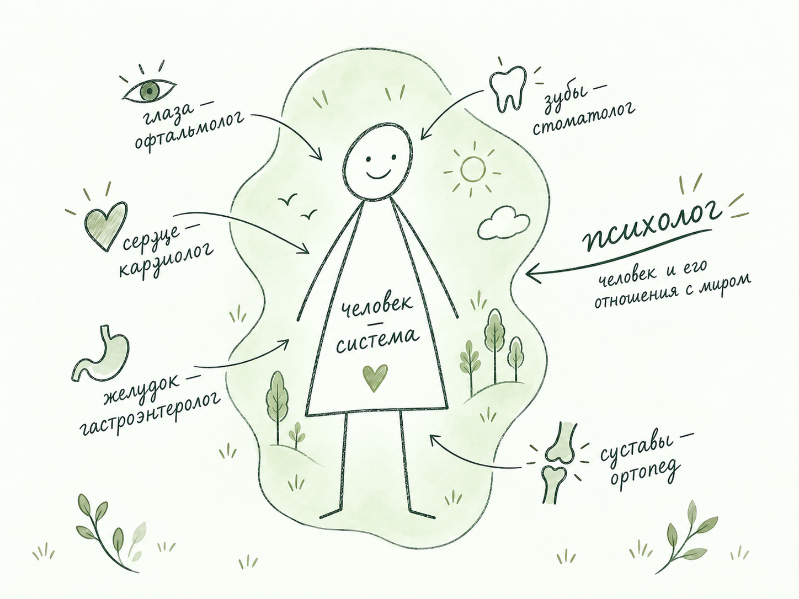
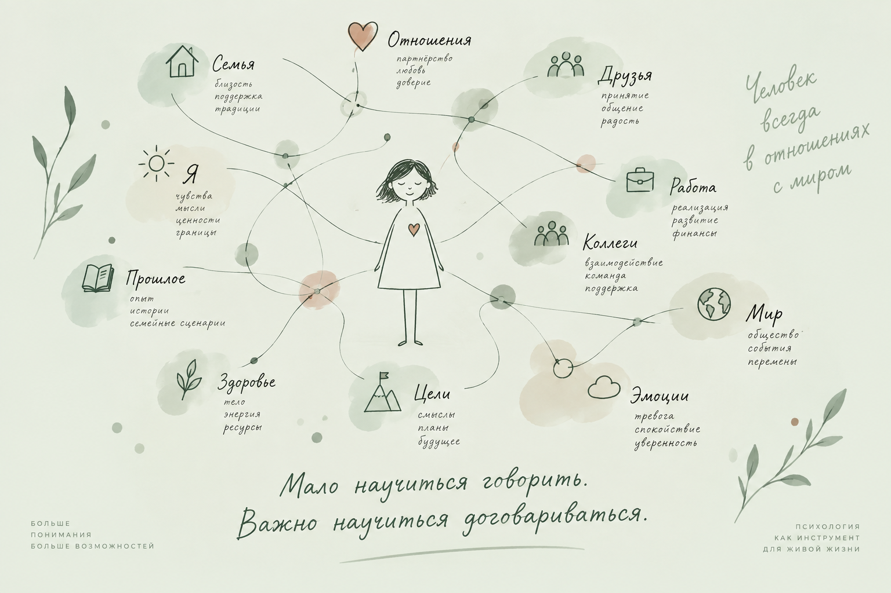

Ирина Лебединская · Социальный психолог
Психология —
от простого
к сложному.
Помогаю увидеть связи между собой, другими людьми и происходящим вокруг — и находить способы взаимодействовать с этим более осознанно.
Связатьсяпонимать → говорить → договариваться
Отправная точка
Психология — инструмент.
Психолог — человек,
владеющий инструментом.
01 / Подход

Понять,
что происходит
Мы живём внутри системы отношений. Наша реакция редко возникает сама по себе: за ней могут стоять ситуация, мысли, чувства и предыдущий опыт.
Психология даёт инструменты, чтобы замечать эти связи. Постепенно становится понятнее, что происходит и как можно действовать дальше.
Ситуация — Мысли — Чувства — Действия
02 / С чем можно обратиться
То, что занимает
ваши мысли.
Не всегда есть один ясный вопрос.
Можно начать с того, что сейчас
кажется важным.
- Отношения
- Самооценка
- Общение
- Перемены
- Конфликты
- Тревога и напряжение
- Личные границы
- Сложный выбор
- Понимание себя
- Взаимодействие с близкими
Место для ваших слов
Не обязательно сразу знать, как правильно назвать то, что с вами происходит.
Можно искать слова постепенно. Начать с ощущения, ситуации или разговора, к которому вы всё время возвращаетесь.
Иногда стоит остановиться и заметить…
От понимания — к взаимодействию
Мало научиться говорить.
Важно научиться
договариваться.
Слышать себя. Замечать другого.
Находить способ быть в диалоге.
03 / Система отношений

04 / Обо мне
Ирина
Лебединская
Социальный психолог
В центре моей работы — человек и его отношения с миром. Мне важно, чтобы психология оставалась понятной: помогала замечать связи, задавать вопросы и лучше понимать себя.
Разговор можно начать с простого — с того, что происходит в вашей жизни сейчас.
Начать разговор05 / Онлайн-консультации
Отдельное направление / Профессиональная инициатива
Содружество
психологов и Ко
Приглашаем к партнёрству, инвестированию, продвижению из разных областей.
Проект открыт к диалогу со специалистами, экспертами и партнёрами, которым интересны новые форматы психологического просвещения и профессионального взаимодействия.
Обсудить сотрудничество06 / Контакт
Начнём
с разговора?
Если хотите обсудить ситуацию или понять, подойдёт ли вам такой формат работы, можно просто написать.